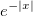
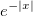
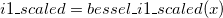
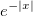

/math-5fa388e83e85c24c432475d72d26837e.png "e^{-|x|}I_1(x)") , where
, where /math-2f7828c97430a57b061a8d47864a43b2.png "I_1(x)") is a modified Bessel function of the first kind. The scanling factor  removes most of the variation in .
is a modified Bessel function of the first kind. The scanling factor  removes most of the variation in . evaluates an approximation to , where is a modified Bessel function of the first kind. The scanling factor  removes most of the variation in .
For more information please review the s18cfc function in the NAG document.
.